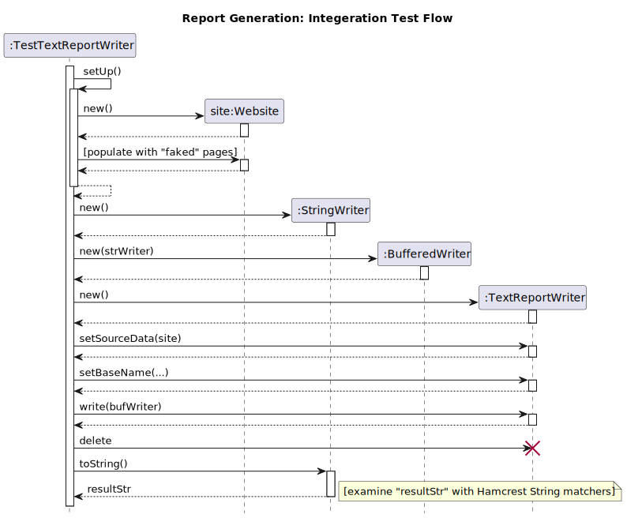
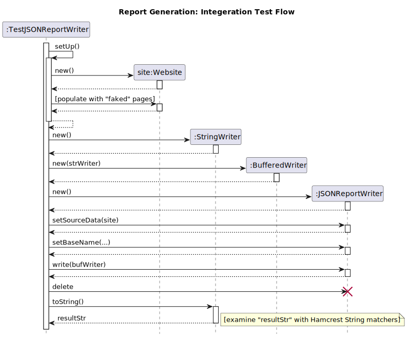

Web Analysis - Integration Test Methodology
Thomas J. Kennedy
1 Integration Tests - High-Level View
The Report Writers need to be tested. Since the Report Writers need to retrieve data from
WebsiteHTMLDocumentResourceand its associated classes
and make use of various support libraries… the resulting tests are Integration Tests.
For the purpose of this discussion… we will use the following definitions:
-
Unit Test - a test that examines a single class without involving other classes.
-
Integration Test - a test that examines the interaction between two or more classes.
-
System Test - a test the examines the program as a whole (start to finish).
The line between integration and system tests is often fuzzy.
For Unit Test suites… the mutator-accessor strategy provides a framework for constructing a test…
- Set up the object to be tested
- Call the mutator function under evaluation
- Call each accessor to confirm that:
- The expected change was made.
- No unexpected changes were made.
Integration tests require a different approach. Our steps will become something along the lines of…
-
Remember that if we are testing code that uses an existing library, either built-in (e.g.,
BufferedReader) or external (e.g., JSoup)…- We are testing our code and how it uses the library.
- We are not testing the library itself.
-
Set up a small set of test data (i.e., small enough to check by hand).
-
Check the results of calling the library, not the library itself.
This is a nuanced difference. Do not worry… there will be an example later in this discussion.
2 Testing the Report Writers
The Report Writers will be tested with Integration Tests.
2.1 Text Writer Test
Let us take a quick look of logic involved in testing the TextReportWriter.

Take note of how a BufferWriter and a StringWriter were used to capture the output. This is a standard trick… and the reason why I emphasize the use of BufferedWriter and BufferedReader so heavily.
2.2 JSON Writer Test
Let us also take a quick look of logic involved in testing the JSONReportWriter.

Do the steps seem familiar? In fact… they are near identical due to the fact that JSON is just formatted text data.
Now… what does the code entail? How do we approach these tests?